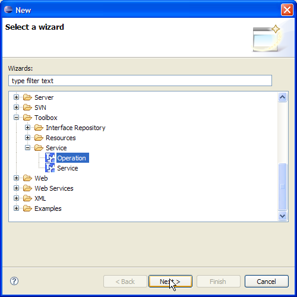
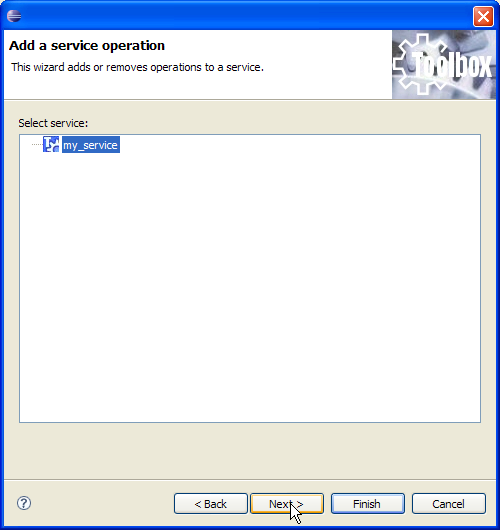
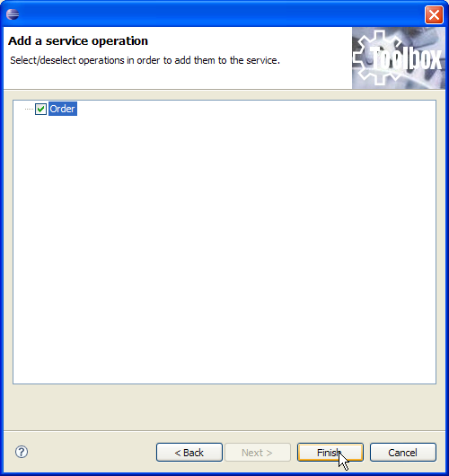
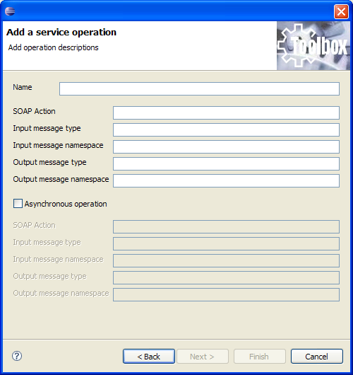

New operations can be added to a service with few clicks at any time. In order to do this, select the service, right click on it and select "New/Other" from the popup menu. The below wizard is shown:

Select "Toolbox/Service/Operation" and click "Next". A new wizard page is shown, allowing you to change the service to operate on (in case you have erroneously selected the wrong service) selecting it. Now click on "Next".

If, when creating the service, an interface has been selected form the Interface Repository, the wizard will let you choose one or more of those operations associated to the interface and not already implemented.
As shown below, in order to add them you have to select them and click on "Finish".

The operation is then added to the service. If, when creating the service, you have specified to implement a new interface, the below page is shown instead of the above one:

This page will ask you all necessary information for describing the new operation. In case of asynchronous operation, the "Asynchronous operation" checkbox shall be selected in order to activate editing of those information relative to the callback message (those field on the bottom of the page).